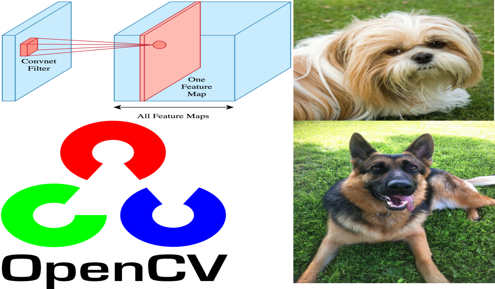

Computer Vision
Image Processing
An introduction!
Conceptual review.
Deep Learning
Bike Sharing Prediction
How to build a neural network from scratch to predict a time series!
A UDACITY Project
Style Transfer
Convolutional neural network art!
A UDACITY project
Generate TV Scripts
Recurrent Neural Network!
A UDACITY project

Dog Breed Identification
CNN - OpenCV!
A UDACITY project
Generate Fake Faces
Adversarial Detworks!
A UDACITY project
Cloud Deployment
AWS Sagemake!
A UDACITY project
Data Science
Bike Sharing Analysis
How to use Matplotlib and Seaborn for visualization!
A UDACITY Project

Explore Weather Trends
Accessing database and using moving average for trend detection!
A UDACITY Project
Data Preparation By Pandas